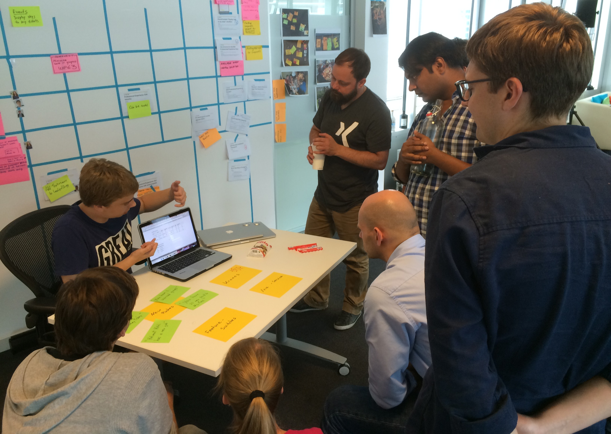
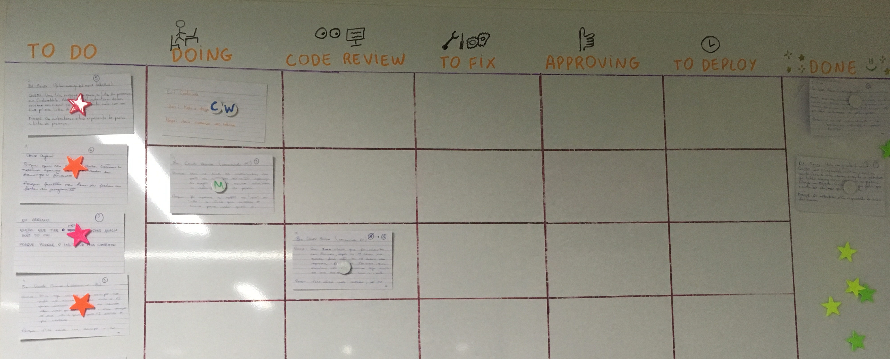
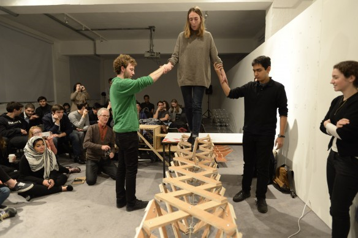
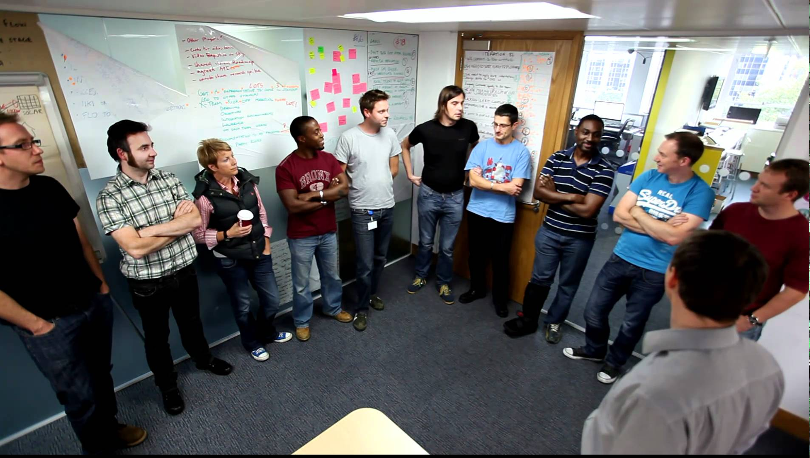
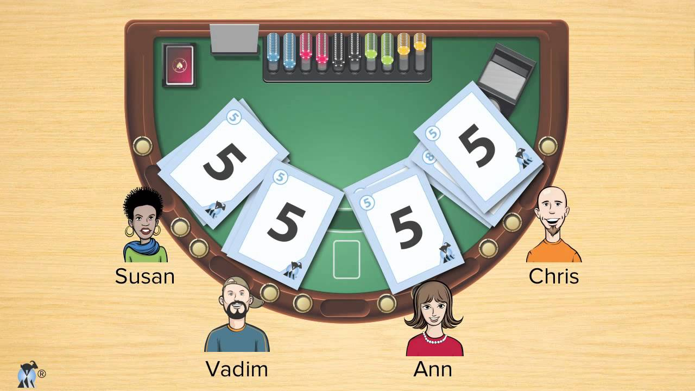
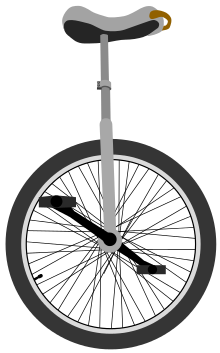
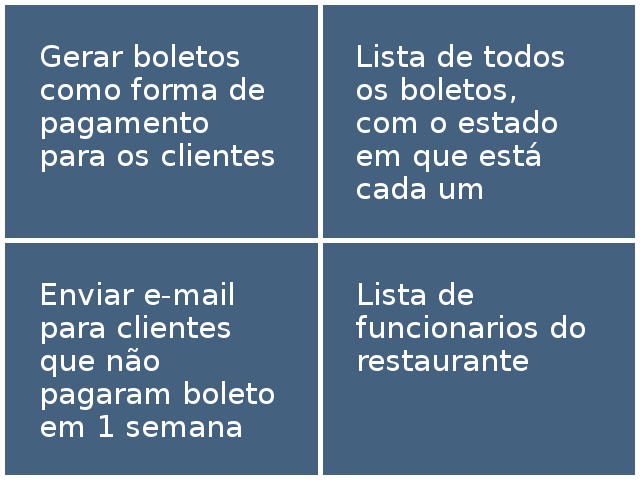

O framework Scrum
Desenvolvedor e Instrutor
Scrum Master => Agile coach
Mas o que é o Scrum?
O que faz? Onde vive?

Apresentado em 1995
OOPSLA
Agile + Lean
Modelo => Framework
como faz? => o que fazer?
Adaptação
Fluxo de trabalho no Scrum
Quais os problemas de tentar planejar tudo no começo?
Timebox
Tudo tem hora para começar e terminar
Se começou, não mexe neste timebox
O que vamos fazer agora que passamos um tempo desenvolvendo?
Review meeting
 https://masterofproject.com/blog/135465/scrum-sprint-reviewQuem participa dela?
Mas qual será o fluxo da reunião?
1° passo: Trazer as histórias PRONTAS
Mas o que é algo estar pronto???
Critério de pronto
Critério de pronto
Passo a passo que toda história percorre para termos segurança que podemos apresentá-la ao cliente
sem que a gente passe vergonha
Como garantimos que as histórias estão ok?
Pede pro usuário testar

Agora que já validamos o que foi feito na sprint, o que fazer?
Quem participa dela?
Qual o formato da reunião?
O que fazemos com os tópicos levantados?
Em que ordem discutimos estes pontos?
Positivos primeiro?
Ou será os negativos?
Só 1 reunião no final da sprint para dicutir os problemas?
Com que frequência problemas surgem num projeto de desenvolvimento?
Como o time sabe quem está fazendo o quer? Ninguém pegou a mesma tarefa?
Seria mais legal investigar isso todos os dias
Daily
 https://www.agileconnection.com/sites/default/files/article/2015/scrum-standup-meeting.jpg{kind=link}
Daily
Reunião diária
Status do time para o time
Daily
Quem participa?
Desenvolvedores e Scrum master
Product Owner (como ouvinte)
Daily
Quanto tempo?
É todo dia né?
15 minutos
Pouco tempo não?
Daily
Cada um responde 3 perguntas:
O que eu fiz?
O que vou fazer?
Problemas e/ou impedimentos
Daily
O que fazer quando alguém fala um problema na daily?
Espera a daily acabar para conversar com a pessoa
Foco da daily: OUVIR
Parênteses
Qual a diferença de problema e impedimento?
Problema
Algo que atrapalha e o time resolve sozinho
Impedimento
Algo que atrapalha que o time TENTOU resolver, mas não conseguiu!
Quem resolve:
Problema?
Impedimento?
Quem resolve?
Problema: time
Impedimento: Scrum master
O que acontece quando terminamos a sprint com a retro?
Começa uma nova sprint
Mas o que precisamos fazer no começo da sprint?
Planning meeting
Turma da MônicaQuem participa?
Time
Mas e o cliente?
Se o PO fez bem o trabalho, o cliente não precisa participar
Qual o objetivo da reunião?
Definir o Sprint Backlog
Das histórias que existem no Product Backlog, quais vamos nos comprometer a fazer nesta sprint!
Mas como vamos definir o que cabe no Sprint Backlog?
1° passo: os devs precisam saber quais as necessidades
Quem sabe explicar? PO
Repete esse processo até passar 2 ou 3 histórias da capacidade do time
PO apresenta a história mais prioritaria do PB do ponto de vista de negócio
Devs discutem história tecnicamente
Devs quebram história em tarefas técnicas
Devs estimam história por esforço
Estimativa por esforço: Planning poker
 Agile Estimating and Planning: Planning PokerQual o esforço?
Qual o esforço?
E agora que temos uma lista de histórias já discutidas entre todos?
Hora dos devs e do PO negociarem o Sprint Backlog
Como saberemos na review que a sprint foi um sucesso?
Exemplo: estamos trabalhando num ERP para um restaurante
Histórias
Qual o maior valor que podemos entregar para o usuário nesta sprint?
META
Nosso usuário pode optar por pagar sua refeição via boleto.
Se cumprimos a meta, a sprint foi um sucesso do ponto de vista de entregar valor para o usuário?
Sim
META
Frase que mostra o maior valor dessa sprint para o usuário/mundo.
E se no meio da sprint surgir uma lei que proibe pagamento via boleto?
Dá para o time alcançar a meta?
Cancelamento da sprint
Somente quando a meta deixa de fazer sentido
Mas o que são as histórias afinal?
História
Item que agrega valor pro usuário
Escrita em 1° pessoa
Mas quem é esse time scrum?
Time de design, kanban e multiprojetos3 figuras:
Desenvolvedor
Product Owner
Scrum master
Quantas pessoas?
Desenvolvedor: 3 até 9 pessoas
Product Owner: 1 pessoa
Scrum master: 1 pessoa
Qual a responsabilidade de cada um?
Desenvolvedor
Decidir a abordagem técnica para os problemas apresentados
Trocar informações e ajudar os companheiros de time
Estimar as histórias durante o planning
Escolher sua próxima tarefa a ser feita, considerando as prioridades da Sprint
Buscar a qualidade do projeto e a redução de erros
Desenvolvedor - NÃO FAZ
Considerar dúvidas técnicas como impedimentos. São apenas problemas
Esperar que alguém decida as atividades a serem feitas por eles
Se recusar a aprender um pouco sobre outras áreas de desenvolvimento
Product owner
Responder às dúvidas dos devs sobre o que está sendo desenvolvido ou indicar quem pode respondê-las melhor
Prover uma meta clara para cada Sprint
Obter feedback e expectativas dos clientes e extrair delas as necessidades
Manter o Product Backlog atualizado: adicionar itens novos; remover itens desatualizados; revisar a priorização do backlog constantemente
Product owner - NÃO FAZ
Saber a resposta para qualquer pergunta, mas sim a quem recorrer
Dizer aos desenvolvedores como, tecnicamente, fazer uma tarefa
Cobrar os desenvolvedores como gerentes tradicionais cobravam
Acumular o papel de Scrum Master
Scrum master
Educar time e clientes sobre agilidade e o processo
Assegurar que a equipe faz o Daily Scrum no horário certo e de modo produtivo
Resolver os impedimentos da melhor maneira possível
Manter o foco das reuniões, facilitar
Identificar pontos de melhoria no processo e no ferramental
Scrum master- NÃO FAZ
Gerenciar o time, distribuindo tarefas ou escolhendo soluções técnicas
Cobrar resultados do time
Ser a pessoa que atualiza as métricas e as cria
Acumular também o papel de Product Owner
Time todo
Melhorar continuamente
Respeitar o que foi combinado
Resolver problemas
Identificar e reportar problemas o mais cedo possível
Dar e receber feedback positivamente
Participar das cerimônias
REFERÊNCIAS
Scrum Guidehttps://www.scrumguides.org/
Agile Manifesto. http://agilemanifesto.org/
Curso Caelum: Gerenciamento Ágil de Projetos de Software com Scrum. https://www.caelum.com.br/curso-agile-scrum